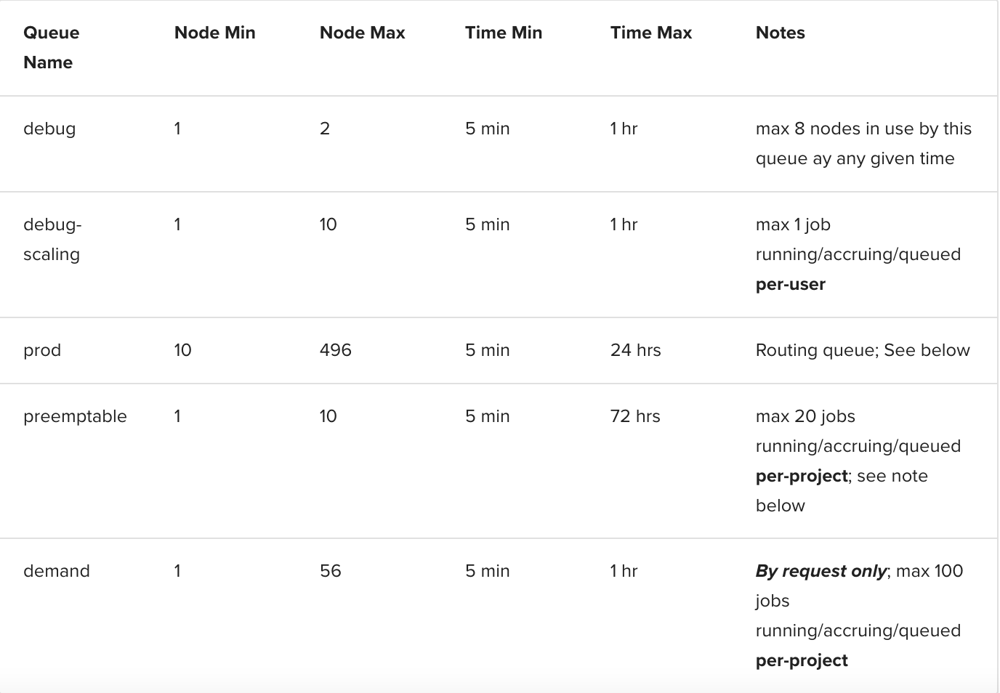
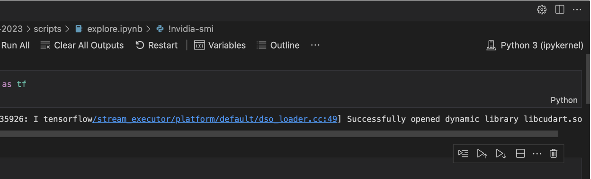
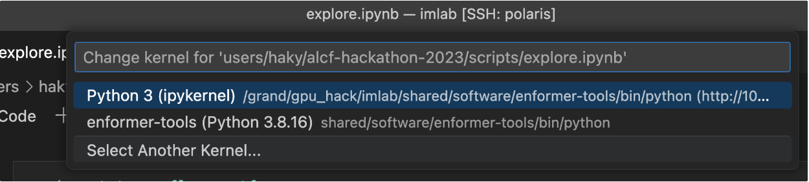
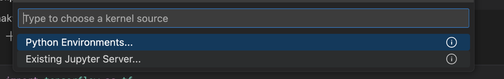
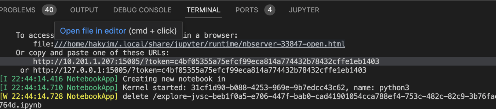

Polaris is a high performance compute system at the Argonne Leadership Computing Facility (ALCF). This post will explain how to use polaris.
Getting Started on Polaris
First, make sure your ALCF user account and mobile token account has been created, and that you have followed the steps outlined in the ALCF user set-up email (including downloading MobilePASS+ to get the tokens).
First your time in the login node
After you login to polaris using the ssh method above, you will be given a notice to users and prompted to type a password, which will be the password in MobilePASS+. Once you are in the login node, you should see something like this in your terminal:
user@polaris-login-02:~>You can run applications on the login node, but most of your work should be run on compute nodes by submitting interactive jobs (which we will cover later).
Once in login node, load conda and create a virtual environment.
module load conda/2023-10-04 #updated conda version
conda activate base
#create venvs directory under ~ for now,
#later we'll use /grand/project/TFXcan or something like this
mkdir -p venvs/polaris/2023-10-04
python3 -m venv venvs/polaris/2023-10-04 --system-site-packagesNext code chunk will activate the environment you just created and install pip.
source venvs/polaris/2023-10-04/bin/activate
python3 -m pip install --upgrade pip setuptools wheelNow, you are free to be able to use pip to install packages as needed into an isolated environment. Example, installing numpy package:
python3 -m pip install wandb numpySubmitting and using a compute node
Most work should be done on the compute node (an interactive job). After logging in to the login node, request a compute node by running the following:
qsub -I -A AIHPC4EDU -l walltime=1:00:00 -l filesystems=home:grand -q debugAbove command will give you an interactive job for 1 hour. Shorter interactive jobs are more likely to be approved, so you will get them faster. However, to get more than just one hour in the job, you can use the “preemptable” queue instead of “debug” and adjust the walltime as desired. For example, getting an 8 hour node:
qsub -I -A AIHPC4EDU -l walltime=08:00:00 -l filesystems=home:grand -q preemptableIf you are waiting for a while to get the compute node, you may want to check the number of free (available) nodes in polaris:
pbsnodes -avjS | grep free | wc -lYou can also check out this cool web-based visualization of free nodes here.
Once you get a compute node, your terminal will look something like this:
user@x3006c0s25b1n0:~>Activate the environments in the compute node.
Activate the base conda and activate your virtual environment where you installed your packages. You need to do this every time you start a compute node or login to the login node where you are working.
module load conda/2023-10-04
conda activate base
source venvs/polaris/2023-10-04/bin/activateHow to start a Jupyter Notebook server in the compute node
First, get your ip address.
my_ip_address=$( ip rule | grep -w '0:' | awk '{print $3;exit}' ) echo $my_ip_address jupyter-notebook --no-browser --ip=$my_ip_address --port=15005Then:
Open a notebook in VSCode from the remote explorer (file with .ipynb extension).
Select a new kernel by clicking on the upper right side of VsCode (for me, it said “Python 3 (ipykernel)”, but yours might say “Select Kernel” or something else)
Polaris is a high performance compute system at the Argonne Leadership Computing Facility (ALCF). This post will explain how to use polaris.
Getting Started on Polaris
First, make sure your ALCF user account and mobile token account has been created, and that you have followed the steps outlined in the ALCF user set-up email (including downloading MobilePASS+ to get the tokens).
First your time in the login node
After you login to polaris using the ssh method above, you will be given a notice to users and prompted to type a password, which will be the password in MobilePASS+. Once you are in the login node, you should see something like this in your terminal:
user@polaris-login-02:~>You can run applications on the login node, but most of your work should be run on compute nodes by submitting interactive jobs (which we will cover later).
Once in login node, load conda and create a virtual environment.
module load conda/2023-10-04 #updated conda version
conda activate base
#create venvs directory under ~ for now,
#later we'll use /grand/project/TFXcan or something like this
mkdir -p venvs/polaris/2023-10-04
python3 -m venv venvs/polaris/2023-10-04 --system-site-packagesNext code chunk will activate the environment you just created and install pip.
source venvs/polaris/2023-10-04/bin/activate
python3 -m pip install --upgrade pip setuptools wheelNow, you are free to be able to use pip to install packages as needed into an isolated environment. Example, installing numpy package:
python3 -m pip install wandb numpySubmitting and using a compute node
Most work should be done on the compute node (an interactive job). After logging in to the login node, request a compute node by running the following:
qsub -I -A AIHPC4EDU -l walltime=1:00:00 -l filesystems=home:grand -q debugAbove command will give you an interactive job for 1 hour. Shorter interactive jobs are more likely to be approved, so you will get them faster. However, to get more than just one hour in the job, you can use the “preemptable” queue instead of “debug” and adjust the walltime as desired. For example, getting an 8 hour node:
qsub -I -A AIHPC4EDU -l walltime=08:00:00 -l filesystems=home:grand -q preemptableIf you are waiting for a while to get the compute node, you may want to check the number of free (available) nodes in polaris:
pbsnodes -avjS | grep free | wc -lYou can also check out this cool web-based visualization of free nodes here.
Once you get a compute node, your terminal will look something like this:
user@x3006c0s25b1n0:~>Table from ALCF; five production queues you can target in your qsub (-q

Activate the environments in the compute node.
Activate the base conda and activate your virtual environment where you installed your packages. You need to do this every time you start a compute node or login to the login node where you are working.
module load conda/2023-10-04
conda activate base
source venvs/polaris/2023-10-04/bin/activateHow to start a Jupyter Notebook server in the compute node
First, get your ip address.
my_ip_address=$( ip rule | grep -w '0:' | awk '{print $3;exit}' ) echo $my_ip_address jupyter-notebook --no-browser --ip=$my_ip_address --port=15005Then:
Open a notebook in VSCode from the remote explorer (file with .ipynb extension).
Select a new kernel by clicking on the upper right side of VsCode (for me, it said “Python 3 (ipykernel)”, but yours might say “Select Kernel” or something else)

A drop-down will pop up at the top of your screen: click on “Select another kernel”

Select “Existing jupyter server”

Select the jupyter sever with the same ip as my_ip_address returned from the code above
If you find the jupyter notebook server with your ip address, choose that. If not, type in the one of the 2 urls shown when starting the jupyter notebook from the GPU (remote) server. The URL will look something like this:
<http://10.201.1.207:15005/?token=c4bf05355a75efcf99eca814a774432b78432cffe1eb1403>Now, the jupyter notebook on VSCode should be running from polaris’s GPU compute node.
Storing Data/Files on Login Node
To store data and other files on the login node without taking space in home, navigate to the following:
/grand/TFXcan/imlab/users/<username>Possible Issues
If you can’t find your IP address when trying to select Jupyter Server
When starting the jupyter server, you should see something like this, where there are two URLs provided. Try the method above where you copy-paste one of the URLs into the drop-down at the top of screen, where it says “Enter a Remote URL”. If one URL does not work, try using the other URL.

If it still doesn’t work, see below.
May need to register your Jupyter Kernel on your local computer to use it on VSCode
On polaris, after running:
my_ip_address=$( ip rule | grep -w '0:' | awk '{print $3;exit}' )Try the following:
echo $my_ip_address
# then you can start the jupyter notebook normally
jupyter-notebook --no-browser --ip=$my_ip_address --port=15005Next, copy-paste your ip address in the following command, along with the port number:
ssh -N -f -L <port>:<ip address>:<port> youruser@polaris.alcf.anl.govRepeat the steps for connecting to the Jupyter Server:
A drop-down will pop up at the top of your screen: click on “Select another kernel”
Select “Existing jupyter server”
Select the jupyter sever with the same ip as my_ip_address returned from the code above